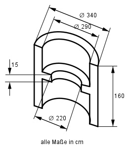

Aufgabe 145 Eine Firma stellt die dargestellten Sitzelemente aus Beton für Rastplätze usw. her. Wie viel m3 Beton braucht man für ein solches Element?

VRückwand = halber Hohlzylinder raußen = daußen/2 = 340 cm/2 = 170 cm rinnen = dinnen/2 = 290 cm/2 = 145 cm VRückwand = п * (raußen2 - rinnen2) * h/2 VRückwand = п * (1702 cm2 - 1452 cm2) * 160 cm/2 VRückwand = 3 956 400 cm3/2 = = 1 978 200 cm3 = 1,978 m3 VSitzbank = halber Hohlzylinder raußen = daußen/2 = 290 cm/2 = 145 cm rinnen = dinnen/2 = 220 cm/2 = 110 cm VSitzbank = п * (raußen2 - rinnen2) * hSitzbank/2 VSitzbank = п * (1452 cm2 - 1102 cm2) * 15 cm/2 VSitzbank = 420 367 cm3/2 = = 210 183 cm3 = 0,21 m3 VElement = 1,978 m3 + 0,21 m3 = 2,19 m3